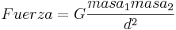

De: La Frikipedia, la enciclopedia extremadamente seria.
De: La Frikipedia, la enciclopedia extremadamente seria. De: La Frikipedia, la enciclopedia extremadamente seria.
Es una ley muy grave y muy chunga recogida en la Constitución española y la Biblia. Inventada por Isaac Newton en su libro publicado en 1687, "Philosophiae Naturalis Principia Mathematica" (era flogger) en el cual establece la forma y explica el fenómeno natural de la atracción sex-appeal que tiene lugar entre dos objetos con masa.
Esta ley se remonta a los tiempos de un tal Risaaca Newtoon, que mientras miraba revistas guarras debajo de un árbol tuvo un accidente. Dios le tiró una manzana desde el cielo que le cayó en la cabeza, dejándolo medio tonto. Desde entonces, se puso a decir no sé qué paranoias de la gravedad del golpe y de que la Tierra le atraía sexualmente. Hay distintas versiones poco creíbles, como la de que fueron unos gamberros subidos al árbol los que tiraron la manzana o como la de que el objeto que golpeó a Newtoon fue una pera, y no una manzana (claro que si se demostrase esta última cambiaría totalmente la teoría y no tendría sentido seguir creyendo en ella).
Risaaca fue contando por ahí su teoría. Nadie le creyó, pero todos los demás no. Hay que mencionar que Nadie también era medio tonto. Los dos empezaron a reunir una banda de hombres medio tontos para apoyar la causa. Así se les unieron Peter Griffin, los siete enanitos, Ánsar, Bugs Bunny y George W. Bush. Este último fue expulsado por no cumplir los requisitos, ya que ni era un hombre, ni era medio tonto (era superdotado, pero eso era antes, después se golpeó la cabeza con una barra de hierro y llegó a ser lo que es ahora). Fundaron un canal de televisión llamado La Secta y en los intermedios del porno transmitían la teoría sobre la gravedad del asunto. Así llegó a todas las personas del mundo mundial y parte del extranjero (menos a los adultos). La teoría se hizo famosa y pasó a ser una ley.
Descubrimos que la ley de la gravedad puede ser expresada de las siguientes 3 formas:
De la Forma Clásica obtenemos que:

Utilizando vectores tenemos que:
Simplificando todo el proceso y haciendo uso de todo tu C.I. establecemos que:
Con el tiempo, la ley se convirtió en religión (peor todavía peor que una teoría o una ley), que veneraba la manzana y odiaba al Dios cruel que la lanzó (todavía no se sabe con cerveza certeza si este Dios es el bicho verde con antenas, el espagueti con ojos o Chuck Norris). Más tarde se cambiaron las tornas y Dios pasó a ser el bueno de la peli. Más tarde todavía pasó a llamarse Cristianismo, en vez de Manzanismo. Desde entonces, las manzanas son la fruta prohibida, aunque la gente va a lo suyo y come (así van luego todos al infierno).
He pretendido escribir este artículo sin citar lo maricón que era la homosexualidad de Newtoon, las orgías de Ánsar y Bush con sus amiguitos (véase Blair), ni el incesto entre los seis enanitos (Mudito murió, ya que al ser mudo no podía hacerle el sexo oral a Gruñón, así que éste lo mató por rabia), pero no me he podido resistir.
| | |||
|
Materia
Magnitudes
Mecánica
Cinética y Dinámica
Energía
Física Cuántica y Nuclear
Científicos
|
Autor(es):